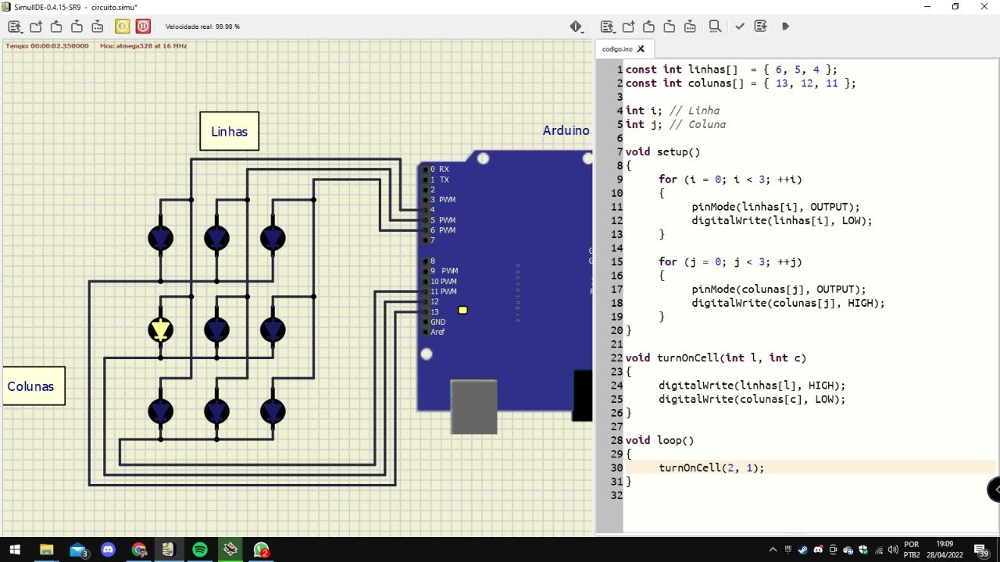
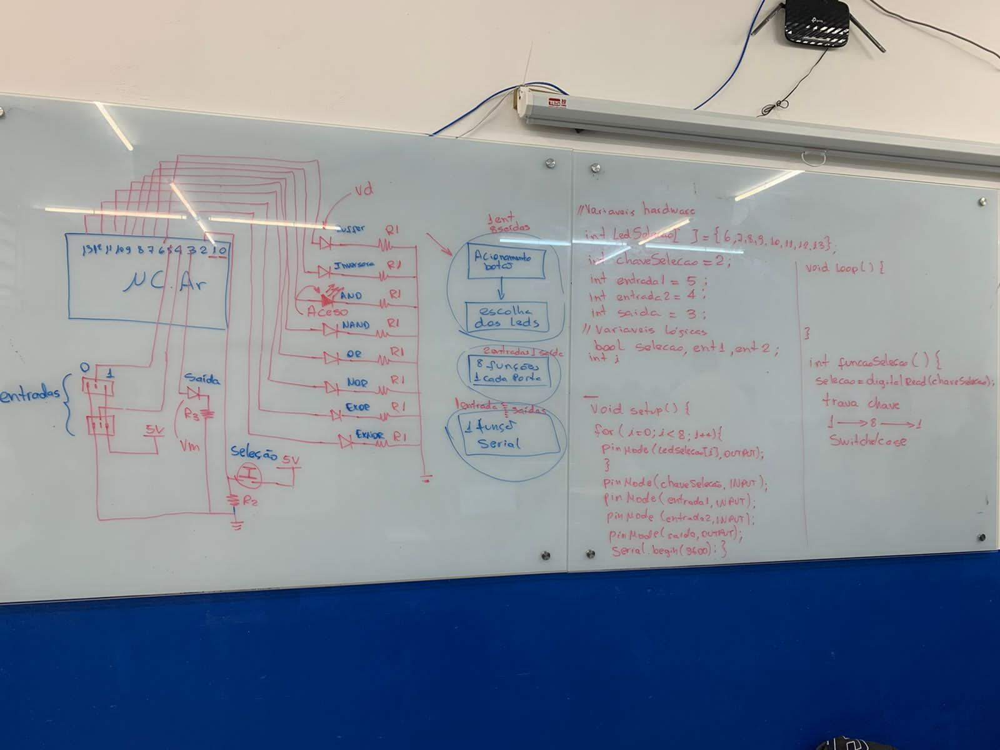

Desenvolvimento de sistemas embarcados, lógica digital e simulações de circuitos. 🗂️

O projeto foi estruturado utilizando vetores (arrays) para organizar as portas de saída. Desenvolvi uma função específica, turnOnCell(int l, int c), que permite acionar qualquer LED da matriz informando apenas as coordenadas de linha e coluna, facilitando a criação de padrões visuais e animações.Este projeto é a base para o funcionamento de painéis de mensagens (letreiros digitais) e telas de dispositivos eletrônicos. O domínio dessa lógica permite criar interfaces visuais de baixo custo para sistemas embarcados e dispositivos de IoT.
Neste projeto, explorei os fundamentos da eletrônica digital e programação em C++. O objetivo foi controlar uma matriz de 9 LEDs através da lógica de multiplexação, otimizando o uso dos pinos de E/S do Arduino Uno.
Destaques técnicos:
1º-Hardware: Uso de resistores para proteção e organização de barramentos de linhas e colunas.
2º-Software: Implementação de loops for para varredura e funções parametrizadas para controle de coordenadas.
3º-Desafio: Sincronização de sinais para evitar 'fantasmas' (ghosting) entre os LEDs vizinhos.

O desenho do quadro nos mostra o planejamento e a teoria do projeto de matriz de leds.Este projeto documenta o desenvolvimento da lógica de controle para periféricos. Antes de programar a matriz de LEDs, desenhei o fluxo de sinais e as portas lógicas necessárias para garantir o acionamento correto das colunas e linhas, otimizando a seleção de endereços.
Desenvolvimento de um contador digital de dois dígitos utilizando displays de 7 segmentos. Apliquei a lógica de multiplexação e varredura temporal aprendida na matriz de LEDs para controlar os 14 segmentos necessários com eficiência de pinos, gerenciando a exibição via código.
Antes da implementação no hardware, realizei o mapeamento completo do fluxo de dados. Defini como os sinais de entrada (sensores ou botões) interagem com a lógica de controle para gerar as respostas desejadas nas saídas (LEDs ou Atuadores).
Fiz a ponte entre o diagrama elétrico e o código em C++. Ao definir a pinagem e as variáveis de hardware ainda no quadro, consegui prever conflitos de portas e organizar o código de forma mais limpa, utilizando arrays para otimizar a manipulação dos pinos do Arduino.
Destaques:
1º-Modelagem de Sinais: Mapeamento de entradas e saídas (I/O) para controle de periféricos via Serial.
2º-Lógica Booleana: Aplicação de portas lógicas (NAND/NOR/XOR) para sistemas de decisão condicional.
3º-Documentação de Processo: Demonstração da capacidade de planejar sistemas complexos antes da fase de prototipagem, reduzindo erros de montagem e depuração de código.